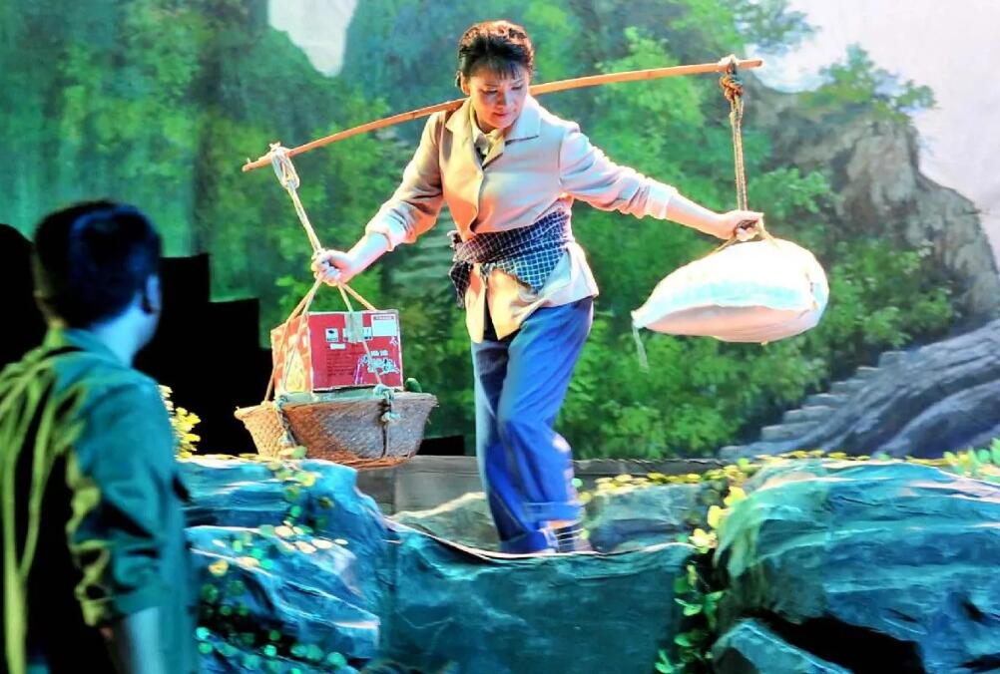

沪剧

沪剧，上海市地方传统戏剧，国家级非物质文化遗产之一。沪剧起源于浦江两岸的田头山歌和民间俚曲，在流传中受到弹词及其他民间说唱的影响，演变成说唱形式的滩簧。
清代道光年间，浦江一带的滩簧发展为二人自奏自唱的“对子戏”和三人以上演员装扮人物、另设专人伴奏的“同场戏”。1898年，已有艺人流入上海，并固定在茶楼坐唱，称作本滩。1914年，本滩易名为申曲。1927年以后，申曲开始演出文明戏和时事剧。1941年上海沪剧社成立，申曲正式改称沪剧。沪剧是以表演现代生活为主的戏曲，其音乐委婉柔和，曲调优美动听，易于塑造现代的典型环境中的典型人物，具有浓郁时代气息和真情实感的艺术美。
2006年，沪剧经中华人民共和国国务院批准列入第一批国家级非物质文化遗产名录，遗产编号Ⅳ-54。
沪剧主要剧目有《陆雅臣》《卖红菱》《十不许》《小分理》《捉牙虫》《阿必大回娘家》《女看灯》《庵堂相会》《顾鼎臣》《杨乃武与小白菜》《啼笑因缘》《阮玲玉自杀》《空谷兰》《冰娘惨史》《雷雨》《魂断蓝桥》《叛逆的女性》《碧落黄泉》《铁骨红梅》《大雷雨》《蝴蝶夫人》《罗汉钱》《为奴隶的母亲》《少奶奶的扇子》《星星之火》《芦荡火种》《红灯记》《张志新之死》《一个明星的遭遇》《明月照母心》《今日梦圆》等。